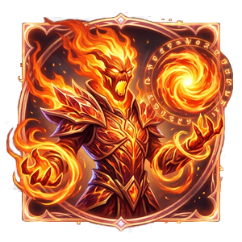
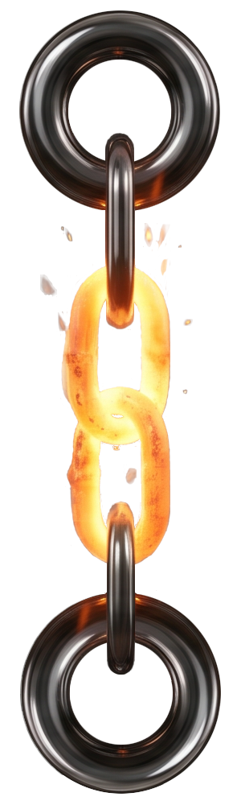
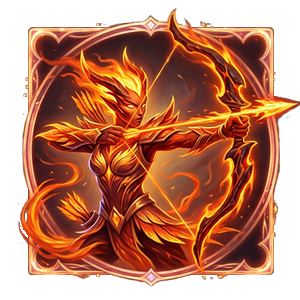
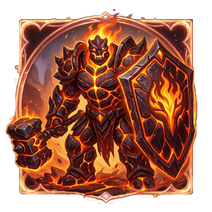

Первые искры первородного пламени всегда хаотичны — это летопись юности огненных элементалей, период, когда дикая магия постепенно обретает форму, повинуясь воле своего создателя.
С каждым шагом развития духи претерпевают удивительные метаморфозы. Вы увидите, как чистая магия Мага сжимается в мистическое тление; как резкая искра Лучника прорастает в направленные кинетические стрелы; и как податливое тепло Танка, едва не поддавшись соблазну чужой стихии Магмы, закаляется в монолитную кузнечную печь. Пять шагов взросления — это лишь подготовка к великому пробуждению, которое ждёт их впереди.
NG-Грейд — это начальный этап пробуждения и взросления элементалей Огня. На этих уровнях юные духи ещё не обрели свою окончательную форму, но их пламя уже начинает адаптироваться под три боевых архетипа: Магию пламенной энергии, Кинетику стрелков или Плотность защитников.
Наблюдайте за тем, как с каждым новым уровнем меняется природа их пламени. Пройдя 5 стадий эволюции от крошечной искры до концентрированного духа, элементаль подготовится к финальному расколу на 6-м уровне, где он навсегда выберет свой истинный путь и превратится в высшее существо стихии.

Крошечный, почти невесомый сгусток первородной энергии. Он ещё не способен обжечь, но уже излучает мягкий мистический свет, чутко реагируя на любые потоки маны вокруг.

Стадия, когда элементаль уходит вглубь себя. Внешнее пламя гаснет, превращаясь в густой волшебный дым, внутри которого концентрируется и накапливается чистая ментальная энергия.
Существо теряет физическую оболочку и становится парящим огоньком. Это фаза идеального контроля над своей магической сутью, позволяющая элементалю легко манипулировать потоками огня.
Дух обретает классическую вытянутую форму живого огня. Он начинает резонировать с пространством, а его движения напоминают ритмичные вспышки, похожие на чтение древних огненных заклятий.
Существо, полностью состоящее из бурлящей, нестабильной плазмы. Оно находится на пике магической юности и готово вот-вот переродиться в полноценного повелителя стихийного колдовства.

Мимолётная, но невероятно стремительная частица огня. Она движется хаотично и обладает высокой пробивной силой, пролетая короткие расстояния в мгновение ока.
Стадия, обучающая элементаля скрытности и таймингу. Существо то вспыхивает, то гаснет, из-за чего врагу тяжело определить его точное местоположение. Идеальная база для будущего мастера дальнего боя.
Первая направленная форма. Элементаль учится мгновенно сжимать и выбрасывать свою энергию вперед, создавая ослепительные линейные вспышки, бьющие точно в цель.
Подросший дух, который становится очень динамичным. Его пламя вытягивается назад по ветру при движении, а сам он развивает огромную скорость, поджигая всё, мимо чего пролетает.
Финальная стадия перед разделением, когда энергия элементаля начинает анатомически вытягиваться и «прорастать» в резкие, направленные стрелы, готовые разить врагов на огромном расстоянии.

Маленький, но очень устойчивый огонёк, который зацепился за физическую основу. Обладает врождённой живучестью и разгорается тем сильнее, чем больше внешнего воздействия получает.
Элементаль обретает первую весомую массу. Он становится плотным, тлеющим ядром, которое крайне тяжело потушить. Способен долго переносить холод и удары, сохраняя внутреннее тепло.
Стадия, когда дух начинает покрываться жесткой коркой. Любая попытка ударить такое существо оборачивается для атакующего сильным ответным ожогом от соприкосновения с концентрированным жаром.
Жидкое пламя элементаля остывает и кристаллизуется, покрываясь первыми тяжелыми пластинами из обсидиана, запекшейся золы и лавы, которые эффективно поглощают физические удары. Элементаль путём проб и ошибок начинает неосознанно притягиваться к стихии Магмы, потому что именно она лучше всего выражает защиту и массу. Но это не наш путь. Вскоре мы обретём могущество в пламени!
Юный хранитель глубинного тепла. Его каменная броня становится монолитной, это уже не лава, а раскалённая добела, чистая кузнечная печь, сплавленная чистым пламенем. А сам он способен удерживать колоссальный урон внутри своего раскалённого ядра, подпитываясь чужими атаками и не позволяя своему пламени угаснуть.